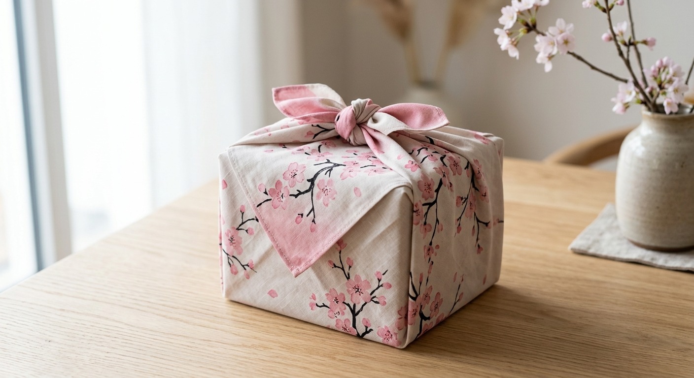

A large reusable furoshiki cloth printed with an ukiyo-e-style cherry blossom pattern - fold it once and the wrapping itself becomes the gift.

The print is pretty enough to leave unwrapped on display.
27.6-inch size wraps boxes, bottles, or bento lunches.
Repurpose as a scarf, bag liner, or wall hanging.
Furoshiki cloths are traditionally printed with classic Japanese motifs, and cherry blossoms (sakura) are among the most recognizable.
Choosing a patterned cloth turns the wrapping step into part of the presentation, not just a cover to be torn off.
A patterned wrap that's part of the presentation.
Double as a reusable lunch bag cover.
Drape it as decor between uses.
Check the current listing for size guidance on bottle wrapping.
Yes - that's the core idea behind furoshiki cloths.
Check the current listing's care instructions.
A large cherry blossom furoshiki wrapping cloth - see current pricing and availability on Amazon.
Check Price on Amazon →